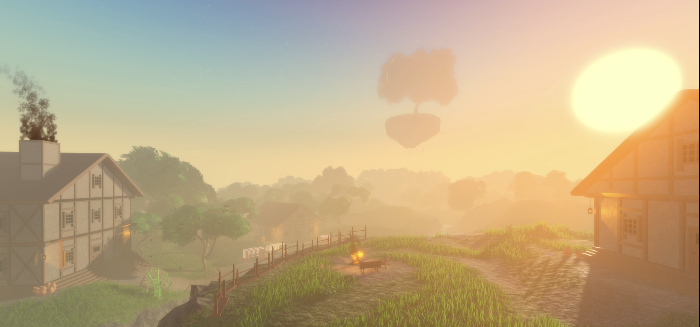

⚡ About Charm
Charm is a PVP/PVE game revolving around the use of magical abilities to defeat opponents, these abilities can be gained by killing them. The game however is way broader than just fighting and offers exploration too! leave the main island and find new magical elements, opponents and quests.
With fast-paced combat and a big variety of things to do, Charm offers an experience that constantly is updated by the developers bringing new content. Rise on the global leaderboard and get the most kills out of everyone.
🙌 Latest Reveals & Updates
👤 NPC
Each NPC features a unique appearance and personalized dialogue. While all NPCs offer interaction, only select individuals provide items or capabilities.
This is Seraphyne she grants the player a blessing. Upon receiving it, the player gains access to the caves beneath the island.

🌠The main island
I always focus on the visuals of my game and wish to promote the best Visual Experience to my beloved players.
The way i kept the map from looking bland and boring was by adding very unique terrain and multiple environmental buildings.
🔱 Water Trident Ability
Water magic users will be able to summon a trident out of condensed water to aid them in battle. This trident will have its own attacks and count as 1/5 skills available to water magic.
To keep each the variation in every element I ofcourse added some original abilities and made sure to involve great visual effects.

🪄 Air Magic Reveal
Here you can see a snapshot of the abilities, I showcased the abilities of the air element in this short video.
Do note the stats of the attacks have changed with due time, things like Cooldown and Damage change frequently to keep the game balanced.
🧙 Icons of the Base Elements
All players have the ability to choose one of four elements when playing the game for the first time.
To make sure the elements are easily differentiated each one has their own Icon/Sigil.
🚀 Project Announcement
I am proud to announce Charm - my first solo project! This game is created out of reminiscence for my first game Incantus Sorcerers, it will be the foundation of our community and a statement of what i am capable of doing alone.
Development will be rapid as solo developing can be very efficient, espescially for games like these which will hold a lot of mechanics that need to be understood. I am very excited for this experience and cant wait releasing it to the public!
🯠Key Features
💨 Fast-Paced Combatt: React as fast as possible to escape even the most formideble opponents.
🥊 Interactive Combat System: Mixing certain abilities together can create powerful combos if used right.
🌠Massive Open World: Instead of staying on the main island and fighting, explore a big world filled with islands that each hold different adventures.
👤 Quests and NPC: Every big update new quests release, some even giving the adventurer access to new elements.